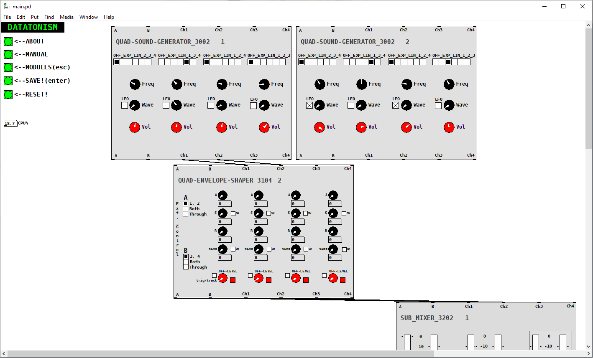
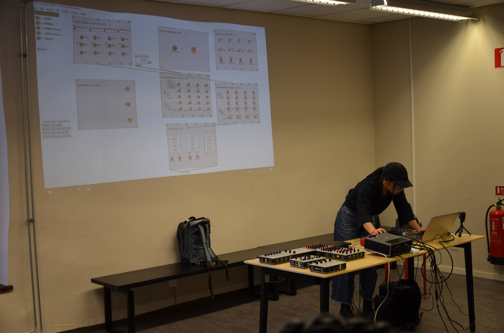

DATATONISM
- Graphical Programming
- DSP
- Pure Data
- User Tests
- Software
Datatonism is a digital emulation of the Dataton System 3000 – a modular synthesizer designed by Björn Sandlund in the 1970's. The project was an interesting insight about the fundamental differences between digital and analog systems. Apart from that, it was also a great exercise in learning more digital signal processing.

The final presentation was held at Scenkonstmuseet and the project itself served as a basis for the paper "Datatonism: Historically Informed Sound Synthesis As A Pedagogic Exercise" which was accepted and presented at the Nordic SMC 2021.
The result is a open-source software that one can download and play around with.